Pickled radishes
Unlike the cucumbers, which get a small dressing-style marinade, the radishes soak in a large amount of liquid: cut, salt briefly, then leave it fully submerged in a sweet-vinegar brine (amazu) in the fridge. Pick your vinegar below and the amounts update.
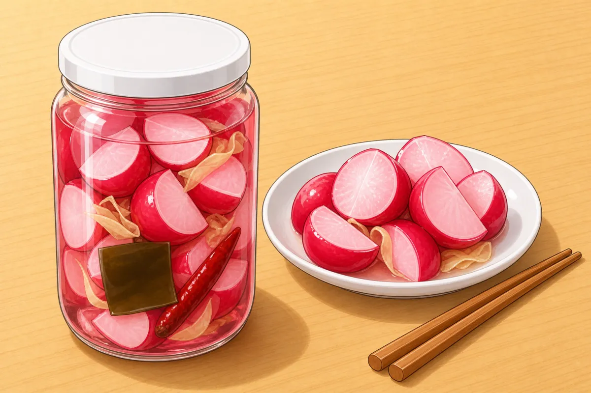
Mise en place — set out in the order it goes in
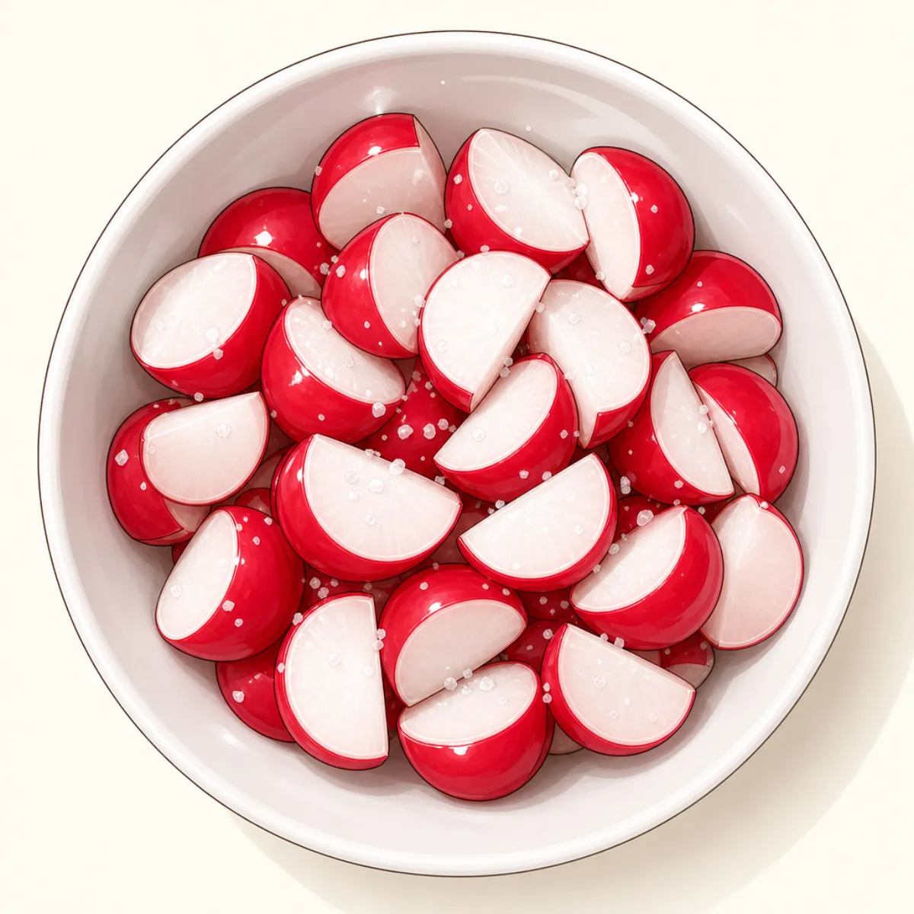
Radisheshalved or quartered, salted, patted dryStep 2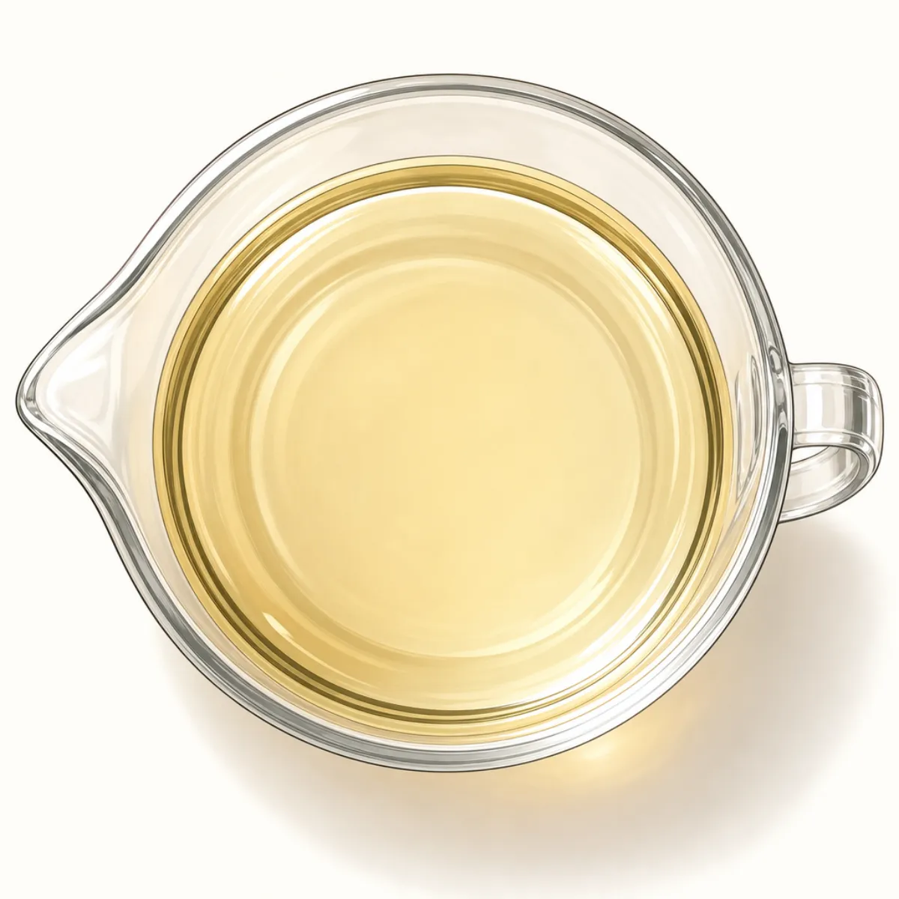
Brinewarmed, then cooledStep 3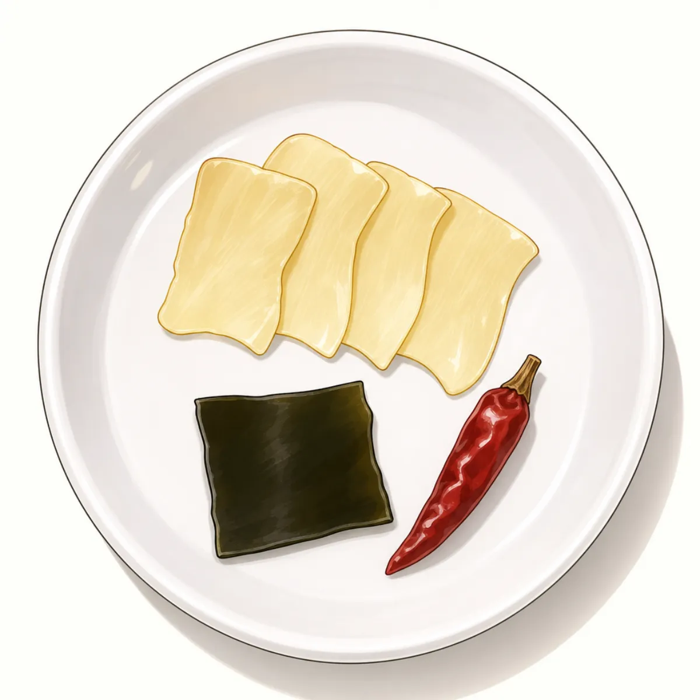
Jar extras- ginger
- kombu
- chilli
Prep order — what happens when, and what overlaps
minutes
0102030405060
Trim + cut radishes 6 min
Salt and rest 25 min
Warm brine to dissolve 4 min
Brine cools 18 min
Rinse, jar, pour brine 4 min
Fridge (6 h → days) 25 min
BoardHands-offPan / stoveBowl / counter
The last bar keeps going: edible after ~6 hours, best after 2–3 days.
Step by step
-
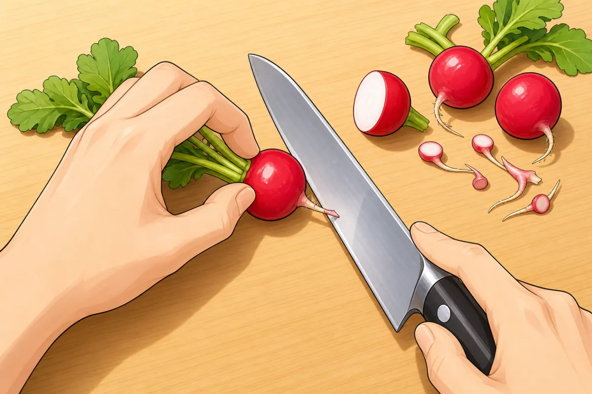
Cut off the leaves and the root tips. 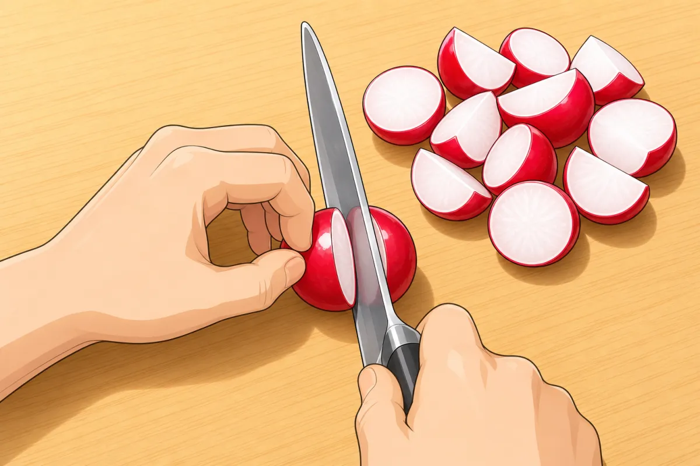
Halve them — quarter the big ones — so the pieces are about the same size. 1Trim and cut
~6 minFor this step
- Red radishes500 g
- Cut off the leaves and the root tips.
- Halve the radishes, or quarter the big ones, so the pieces are about the same size.
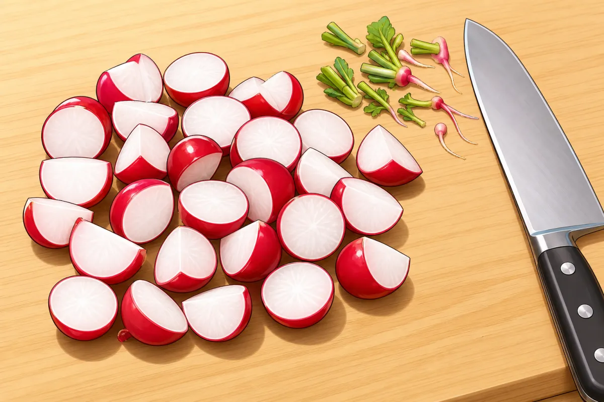
Should look like this -
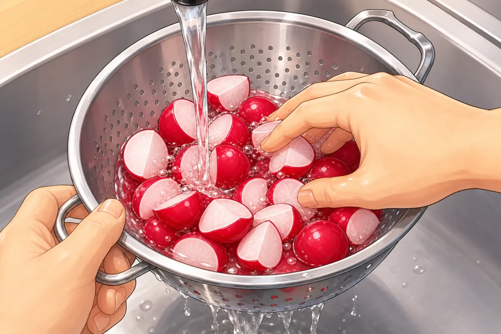
After 20–30 minutes, rinse off the salt and the juice under cold water, then drain. 2Salt, then rinse
20–30 minFor this step
- Salt, for drawing out water1 tsp
- Toss the cut radishes with 1 tsp salt and leave 20–30 minutes — they give off juice.
- Rinse off the salt and the juice under cold water and drain well. They’ll stay crunchy and take up the brine better.
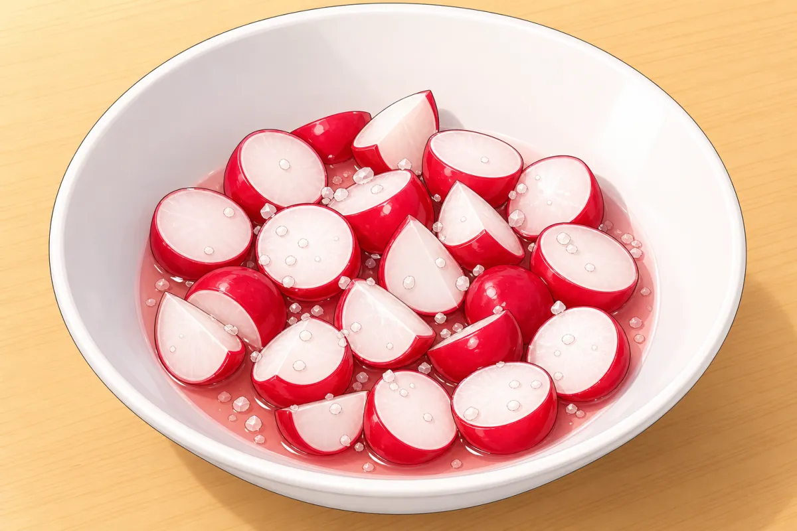
Should look like this -
3Make the brine
low~4 min + cooling- Warm just until the sugar dissolves (mirin only if using):
- rice vinegar 150 ml
- water 150 ml +
- sugar 60 g (5 tbsp)
- salt 1 tsp
- mirin 2 tbsp
- Don’t boil it. Let it cool.
- Warm just until the sugar dissolves (mirin only if using):
-
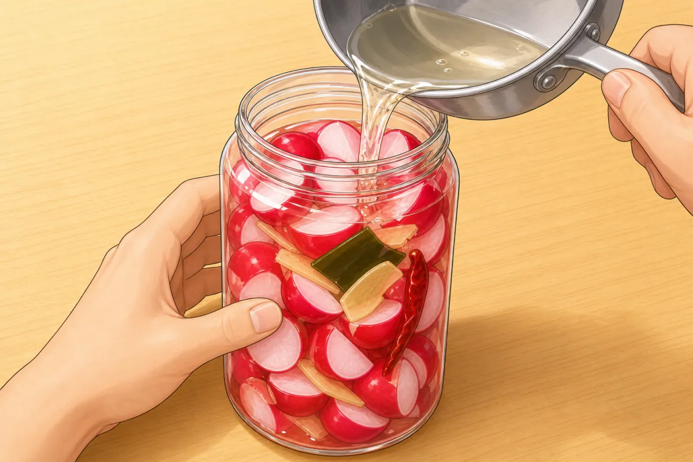
Pack the radishes into the jar, tuck in the kombu and chilli, then pour over the cooled brine until everything is submerged. 4Into the jar
~3 minFor this step
- Fresh ginger, peeler stripsvery little: about 1 strip per 2–3 radishes
- Pack the radishes into the jar.
- Tuck in:
- fresh ginger, a few peeler strips
- kombu a 5 cm square
- dried chilli 1
- yuzu or lemon peel a strip
- Pour over the cooled brine until everything is fully submerged.
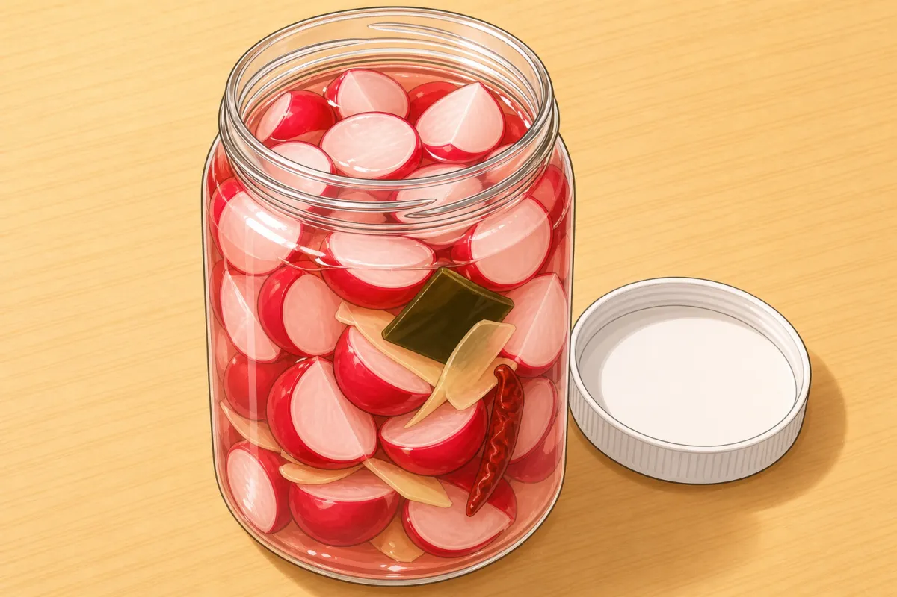
Should look like this -
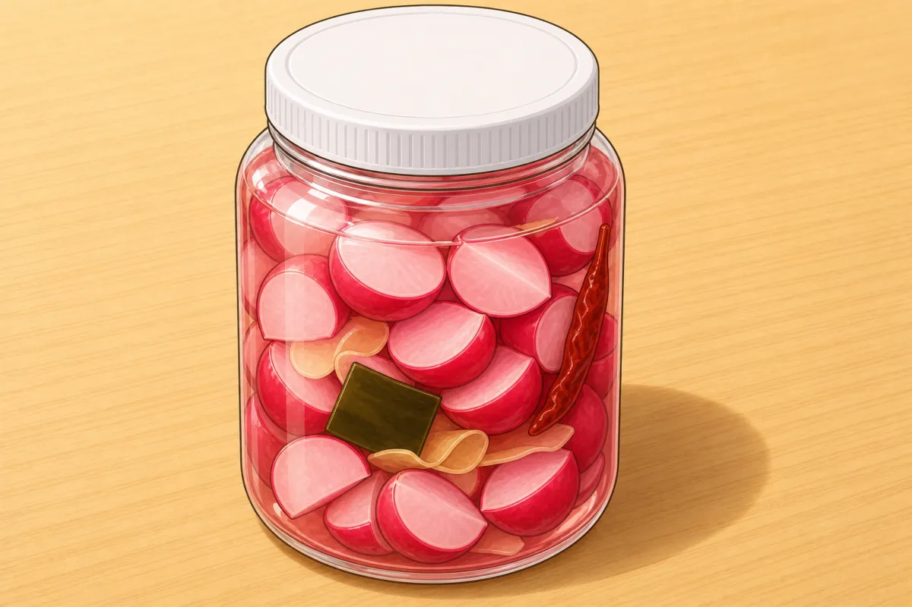
5Wait
6 h – 2 weeks- Lid on, into the fridge.
- Good after about 6 hours, best after 2–3 days.
- Keeps about 2 weeks; always lift pieces out with clean chopsticks.
-
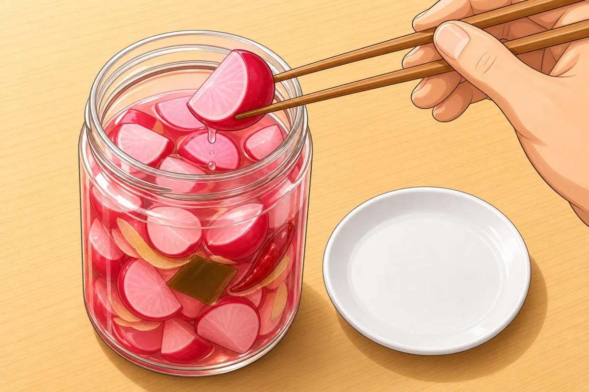
Always lift pieces out with clean chopsticks. 6Serve
Serve chilled as a side with rice, alongside karaage or in a bento.
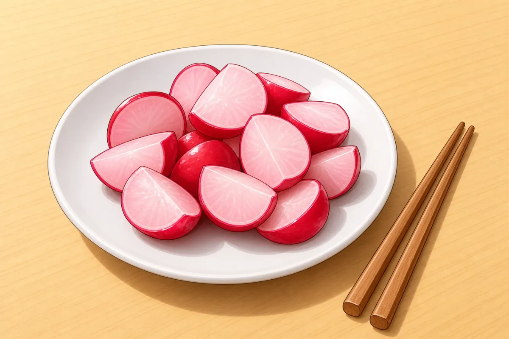
Should look like this